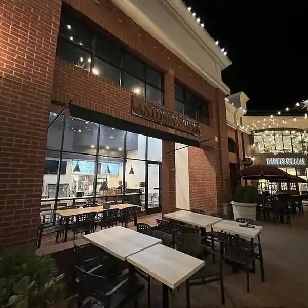
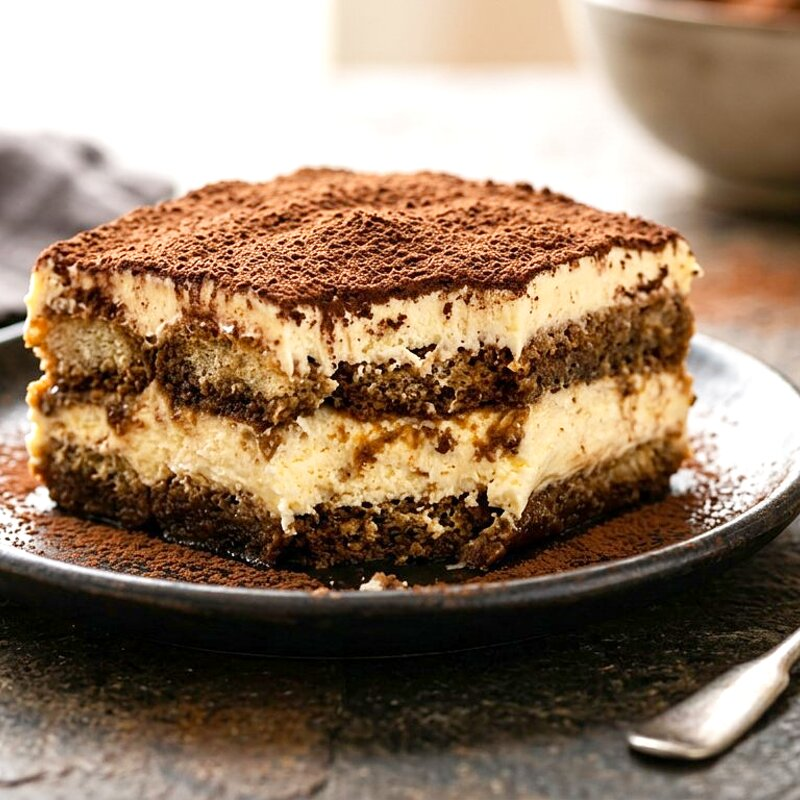

Blog — Stories & Late Nights
dough, ajarski & wine country
Two downtown kitchens, same dough. Stories from Higuera St and 12th St — how we make dough, why Ajarski exists, late-night SLO culture, Paso Robles wine pairings, seasonal specials. No invented facts — owner to confirm details.

Late Night · SLO
Why we stay open till 2AM on Higuera
Students, shift workers and Farmers' Market crowds — the reason late-night pizza exists in SLO. Hours Sun-Wed 11-mid, Thu-Sat 11-2AM. Facts only.

Wine Country · Paso Robles
Pizza & Paso Robles wine — what pairs with what
From City Park to wineries — how we think about pizza in wine country. No invented pairings — owner to confirm favorites.